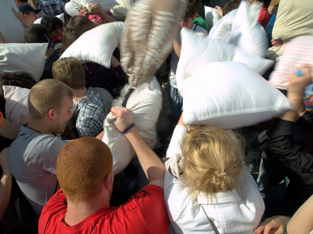

Følgende er min tale til De Kreatives 1. maj i Huset i Magstræde.

Foto: David Shankbone.
Jeg er meget beæret over at have fået lov til at åbne talerækken i dag. Ikke mindst fordi de efterfølgende talere alle er så vægtige stemmer i de danske og internationale debatter om kreativitet, kulturliv, innovation og aktivisme.
Sidste år holdt jeg mit livs første førte maj tale. Det foregik i Fælledparken i regi af PROSA, den fagforening der kæmper for de it-professionelles rettigheder på arbejdsmarkedet.
Sidste år fortalte jeg om, hvordan dansk internetpolitik, efter godt et årtis ørkenvandring endelig så ud til at have fundet vej tilbage på et spor, der er et frit og åbent samfund værdigt. Et frit og åbent samfund kræver nemlig et frit og åbent internet.
Den største trussel mod det frie og åbne internet var på det tidspunkt ACTA-traktaten, der dengang, og ikke uden en del postyr, imidlertid så ud til at falde, da den skulle til afstemning i Europaparlamentet. Det gjorde den så, til min og mange andres store lettelse.
En anden trussel, der lå på lur sidste år på dette tidspunkt, var den såkaldte brevmodel, det nok ringeste stykke lovarbejde i mands minde, som ville gøre internetudbyderne til den såkaldt kreative branches forlængede arm. Brevmodellen blev heldigvis også arkiveret, men desværre ikke kastet på den politiske mødding, som den kom fra.
Det var ikke mindst takket være den daværende kulturminister og kommende taler i dag, at brevmodellen aldrig blev behandlet som lov af folketinget, ikke mindst fordi han ikke lod sig hundse med af de såkaldt kreative branchers lobbyister og sine egne embedsmænd. (Hvis det da er til at kende forskel mellem disse to størrelser.)
Sidst men ikke mindst blev der sidste år på dette tidspunkt rejst politisk debat om den massive og beviseligt nyttesløse registrering af danske borgeres færden på nettet, en registrering hvis omfang DDRs Stasi ville have sukket længselsfuldt efter, men som Justitsministeren til stadighed fastholder er nødvendig, på trods af at der ikke er fremlagt et eneste tilfælde, hvor den er benyttet til at fange kriminelle, og på trods af at et flertal uden om regeringen i folketinget ønsker at skrotte netop denne form for registrering.
Men hvorfor snakker jeg nu om overvågning af internettet på en dag, der skulle være helliget kreativitet og fejre de kreative? Først og fremmest fordi de såkaldt kreative branchers øverste repræsentant i Danmark, Maria Fredenslund, der er leder af RettighedsAlliancen, eller AntiPiratGruppen, som den er bedre kendt som, for nylig på fjernsyn gav udtryk for at hun gerne ville benytte logningsdata til at fange folk, der delte kreativt indhold på nettet.
Netop som man troede at dansk internetpolitik var kommet på rette spor og at vi havde indset at et frit og åbent samfund kræver et frit og åbent internet, stikker den såkaldt kreative branches mest bagstræberiske aktør sit hovede frem og ønsker mere overvågning. Igen.
For lidt over et år siden fik RettighedsAlliancen ligeledes censureret musiktjenesten Grooveshark bort fra den danske del af internettet, i bund og grund fordi KODA ikke kunne få en aftale i stand med selskabet. Nu har KODA i tre år forhandlet med Google om at få en aftale i stand om betaling for musikafspilninger på YouTube. Lige som med Grooveshark er dette ikke lykkedes, og forhandlingerne er gået i hårdknude. Spørgsmålet er, om RettighedsAlliancen er villige til at censurere YouTube inden for rigets grænser, hvis forhandlingerne bryder endeligt sammen?
Spørgsmålet er, om denne overvågningstrang og lyst til at censurere internettet, som herhjemme har RettighedsAlliancen som sin vigtigste eksponent, virkelig er en del af, hvad vi kan betragte som de kreatives kulturpolitik?
Måske skulle vi lægge et mere nuanceret blik, når vi taler om de såkaldt kreative brancher? Først og fremmest må man spørge de kreative, om de i fællesskab føler sig repræsenteret af den organisation i Danmark, der arbejder mest målrettet for mere overvågning og mere censur af interntettet.
Det er jo langt fra de kreative, der hver for sig har meldt sig ind i RettighedsAlliancen. Det er deres organisationer. Man kan spørge alle de forskere, hvis rettigheder kollektivt varetages af UBVA, om censur af udenlandske hjemmesider i virkeligheden er i deres interesse. Man kan spørge alle de journalister, der kollektivt er organiseret i Dansk Journalistforbund om det er deres holdning, at internettet skal overvåges yderligere og om det kan være rigtigt at internetudbyderne skal stå for denne registrering?
Der er mange spørgsmål, man kan stille medlemmerne af de kreative fags organisationer i forhold til den politik, deres øverste fællesorgan arbejder for.
Det vigtigste spørgsmål er imidlertid hvis interesser, der bliver varetaget, når RettighedsAllinancen lobbyer for kontrol med internettet. Er det de kreatives selv, eller er det de brancheorganisationer, som de kreative fags organisationer har haft som sengekammerater i løbet af det sidste årti?
Musikerne i seng med de pladeselskaber, der lever af at trække værdi ud af deres kreativitet. Forfatterne i seng med de forlag, der bestemmer, hvem der får direkte adgang til bogmarkedet og hvem der må finde vej selv. Filminstruktører og skuespillere i seng med de producenter og videodistributører, som de skal forhandle med om fordelingen af billetindtægter, når biograferne har taget halvdelen.
Der er ingen kreativ klasse, heller ikke selvom der eksisterer en klasse af mennesker, der arbejder kreativt. Og en klasse af mennesker, der tjener penge på at trække værdi ud af hvad de kreative skaber. Lige som stort set alle andre steder på arbejdsmarkedet.
Der er ingen kreativ klasse, og som sengekantsorgiet i RettighedsAlliancen bevidner, er der heller ingen kreativ klassekamp, da de kreatives faglige organisationer har fået overbevist sig selv om, at de har et interessefællesskab med den såkaldt kreative branches organisationer.
Prøv engang at forestille jer, at Kommunernes Landsforening og Dansk Lærerforening stod skulder ved skulder i den samme interesseorganisation. Den form for organisering af arbejdsmarkedets parter, kaldes for korporatisme og kendes bedst fra Mussolinis Italien. Ikke et ord mere om det…
Hvordan kan det til gengæld lade sig gøre for det kreative arbejdsmarkeds parter at overbevise sige selv om, at de har et interessefællesskab? Svaret gemmer sig naturligvis i ophavsretten.
Der ligger og gemmer sig en æstetisk teori bag vores forestillinger og retorik om ophavsretten. Der ligger flere faktisk, men den mest interessante i denne sammenhæng er teorien om, at de kreative ikke bliver ved med at være kreative, med mindre de får en metaforisk ejendomsret over de værker de skaber, på samme måde som forældre får en metaforisk ejendomsret over de børn, de har været med til at skabe.
Denne metaforiske ejendomsret cirkulerer i de såkaldt kreative brancher som en slags religiøs trosbekendelse. Der er visse ophavsretsadvokater, som jeg vil gå så langt som til at sige at de er fundamentalister. De mener, at ophavsretten har værdi i sig selv ud over som middel til et samfundsmæssigt mål.
Men jeg gider faktisk ikke bruge mere tid på at snakke om ophavsret. Hvis man er interesseret i at vide hvad jeg mener om ophavsretten, synes jeg man skal google “Henrik Chulu” og “ophavsret” og gå i gang med at læse. Jeg er ikke imod ophavsretten. Jeg vil gerne se den revideret, men jeg ved, at det er der lange udsigter til. Først og fremmest bør den bare sættes på plads. Den er gået langt over gevind og har infiltreret dele af vores samfund, som den aldrig var beregnet til at regulere, nemlig vores private kommunikation og vores mulighed for offentlig debat uden censur. Nok om det.
Jeg vil meget hellere tale om et spørgsmål, der ligger mig tungere på sinde: Det er spørgsmålet om, hvad vi skal leve af fremtiden? Normalt bliver det formuleret som et spørgsmål om, hvad det er, der gør, at vi kan konkurrere med kineserne. Og svaret er altid “kreativitet.” Vi skal leve af at være kreative. Der ligger en uhyggelig, grænsende til racistisk geopolitisk forestilling gemt i det svar. Det antager nemlig at kinesere grundlæggende ikke er i stand til at være kreative.
Hvis man bare tager et enkelt område, nemlig internettet, kan man hurtigt se at kinesere kan være hyperkreative. Når det kommer til at finde på systemet, der kan overvåge internettet og censurere indhold bort fra det (og således inspirere RettighedsAlliancen herhjemme) er der ikke nogen lande i verden, der overgår Kina i kreativitet.
Det kan vi ikke konkurrere med. Til gengæld kan vi konkurrere på vores samfunds frihed og åbenhed. Men et frit og åbent samfund kræver et frit og åbent internet. Et frit og åbent samfund, med et frit og åbent internet, er det vi skal leve af i fremtiden. Det er selve grundlaget for at vi fortsat kan være kreative.
Det frie og åbne internet har undermineret de markeds- og mediemonopoler, som de kreative hidtil har været underlagt, og derved givet dem mulighed for selv at varetage deres økonomiske interesser i højere grad.
Det frie og åbne internet byder på langt større muligheder, både kreative og økonomiske, hvis de kreative selv tager teten og udforsker de muligheder, som den såkaldt kreative branche i godt et årti har været alt for skræmt og bange til selv at udforske, endsige udnytte kommercielt.
DiGiDi, som i dag arrangerer 1. maj for de kreative for første gang, er blot ét eksempel, måske det bedste i Danmark, på at det sagtens kan lade sig gøre at tjene penge som kreativ, selvom internettet er frit og åbent, uden overvågning og uden censur.
Senest har DiGiDi for eksempel for eksempel indgået en aftale med YouTube om betaling for musikafspilning. De sidste tre år har KODA forsøgt det samme, men forhandlingerne her er som sagt gået i hårdknude. Fra nu af bliver DiGiDis aftale det figenblad, som RettighedsAlliancen må dække sig under, når de bliver spurgt om, hvorfor YouTube ikke skal censureres fra internettet i Danmark.
Det er de kreative, der selv må gå forrest, når det handler om at udvikle nye digitale forretningsmodeller. Hvis man overlader denne udviking til de såkaldt kreative brancher, kommer vi ikke til at se nye og bedre muligheder for kreativ udfoldelse og udvikling, men blot nye tremmebure, som kan erstatte de gamle og hjælpe de gamle mediemaskiner med fastholde deres monopolagtige magt over vores fællesskaber.
Og fælleskab er nøgleordet, når det kommer til at udvikle digitale forretningsmodeller. Uden fælleskaber, ingen forretning. Hvis man vil leve af at være kreativ, skal man ikke længere kun være i stand til at skabe værker, man skal være i stand til at skabe grobund for nye fællesskaber, eller udvide de gamle.
Derfor handler de kreatives kamp i sidste ende om det samme som resten af danmarks faglige kamp. Det handler om frie muligheder for at udfolde sig, om lige adgang til samfundets velstand, og om fællesskab.
Frihed i dag handler i højere og højere grad om den frie adgang til at kunne dele information digitalt. Her mener jeg ikke gratis, men frit, som i frihed. Hvordan man vælger at tage sig betalt for sit arbejde må ikke gå ud over, at enhver frit skal kunne benytte sig af vores fælles kommunikative infrastruktur.
Lighed i dag handler om, hvad vi vælger at betragte som et grundlæggende niveau for levestandard. Der er ingen, der har bestemt, at man skal være fattig for at være kreativ. Det er vel ingen hemmelighed, at det væsentligste kulturpolitiske instrument i Danmark er dagpengesystemet og Statens Uddannelsesstøtte. Vi har som samfund valgt, at man ikke skal gå sulten i seng, fordi man ikke har et fast arbejde, eller fordi man vælger at dygtiggøre sig. Dette fundamentalt høje bundniveau for levestandard er den primære gødning for det kreative vækstlag.
På den måde er de kreatives interesser direkte sammenfaldende med resten af dem, som betragter 1. maj som en kampdag og som det godt kan betale sig at solidarisere sig med, når hvad der tidligere blev betragtet som fælles goder, stille og roligt bliver til privilegier for de mest velstillede.
Vores velfærdssamfund giver de kreative et naturligt interessefællesskab med resten af fagbevægelsen. Dette fællesskab handler ikke kun om økonomiske goder. De kreative kan, hvis de vil, gøre interessefællesskabet til et egentligt kulturelt fællesskab. For hvad er kultur egentlig? Først og fremmest er kultur noget, som man har til fælles. Kultur er noget, som man deler med hinanden. Det er den fælled, hvor vi allesammen kan mødes.
Derfor håber jeg inderligt, at de kreatives 1. maj næste år vil blive afholdt sammen med resten af fagbevægelsen i Fælledparken.
Tak.